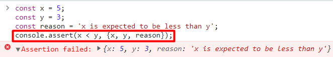
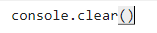
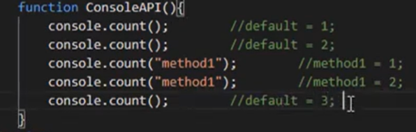
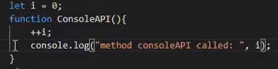
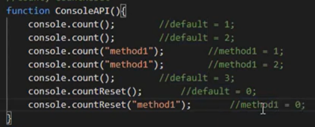
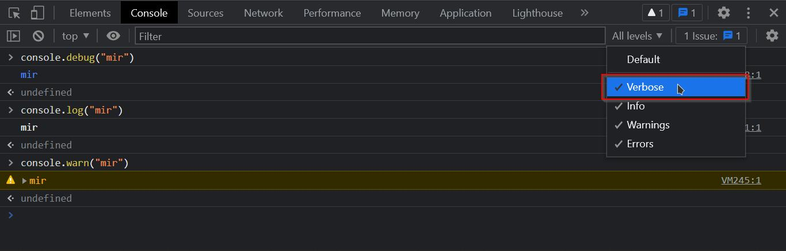
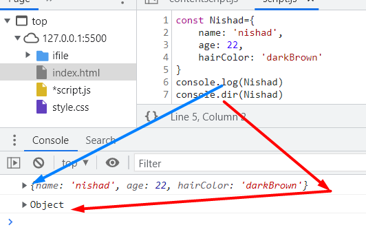
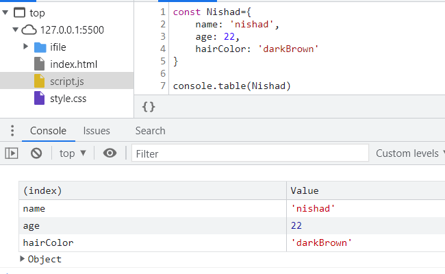
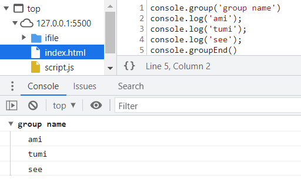
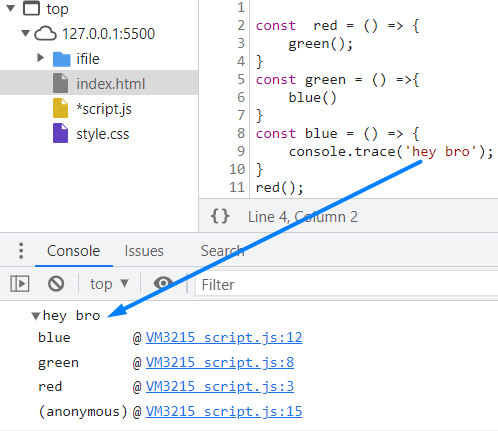

এটা দিয়ে loagic টা true নাকি false সেটা check করে ।
true হলে কিছুই হয়না , কিন্তু false হলে একটা error মেসেজ show করে ।

যেমন :-

_____ console.clear() ______
এটা console এর মধ্যে যা কিছু আছে সেটাকে clear করার কাজ করে থাকে

_____ console.count() ______
যখন একটা function কতবার করা হয়েছে অথবা কোন কাজ কতবার করা হয়েছে সেটা চেক করতে হয় তখন এটার ব্যেবহার করতে হয়
একবার call করলে সেটা value 1 দেখাবে , দুইবার call করলে 2 দেখাবে ।
 এটা কাজ করে এরকম :-

_____ console.countReset() ______
console.count() এর value কে Reset করার জন্য ব্যেবহার করা হয় 
_____ console.debug() ______
console এর কয়েকটা level আছে। আমরা যেভাবে console.warn() দিয়ে warning level এ একটা message দেখাতে পারি। সেভাবে console.debug() দিয়ে verbose level এ একটা massage দেখাতে পারি।

_____ console.dir() ______
Prints a JSON representation of the specified object. এটা কোন object কে JSON রুপে দেখতে হলে এটার বেয়বহার করতে হয়

_____ console.dirxml() ______
Prints an XML representation of the descendants of Node
console.dirxlm() কোনো একটা html element কে interactive object এর মতো করে return করে। এতে করে সেটা দেখতে সুবিধা হয়।
_____ console.table() ______
কোন object কে table আকারে দেখতে হলে এটা ব্যেবহার করতে হয় ।

_____ console.warn() ______
এটা ব্যেবহার করা হয় warning level এ warning message দেখানোর ক্ষেত্রে ?
_____ console.error() ______
এটা ব্যেবহার করা হয় error level এ error message দেখানোর ক্ষেত্রে ?
_____ console.info() ______
এটা ব্যেবহার করা হয় info level এ info message দেখানোর ক্ষেত্রে ?
_____ console.time() ______ _____ console.timeEnd() ______
এটা দিয়ে একটা কোড run হতে মোট কত সময় লেগেছে সেটা দেখা হয় ।

_____ console.group() ______ _____ console.groupEnd() ______
এটা দিয়ে কিছু data কে একটা group এর মধ্যে রেখে সেটাকে আলাদা করে দেখা যায়

_____ console.trace() ______
এটার সাহয্যে কোন এটা function কে কোন পর্যায়ে call করা হয়েছে সেটা দেখা হয় 